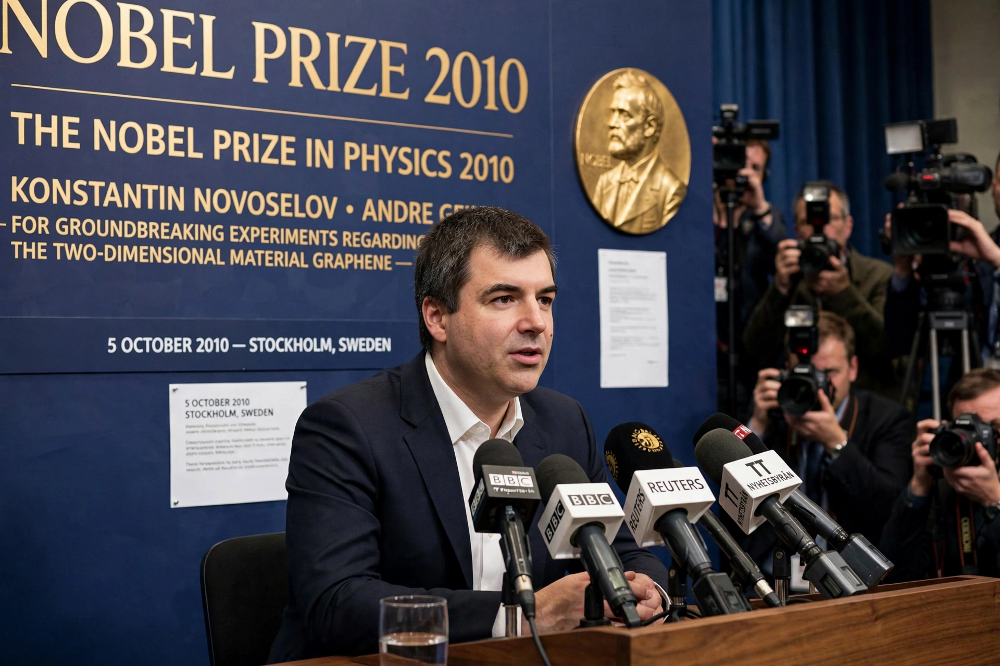

Konstantin Novoselov

Sir Konstantin Sergeevich Novoselov (born 23 August 1974) is a Russian–British physicist best known for his work on graphene with Andre Geim, for which the two shared the 2010 Nobel Prize in Physics. At 36, Novoselov was the youngest physics laureate in several decades. He is a professor at the University of Manchester and also holds a position at the National University of Singapore, and he works on a wide range of two-dimensional materials and their heterostructures.
| Born | 23 August 1974, Nizhny Tagil, Russian SFSR, Soviet Union |
|---|---|
| Institutions | University of Manchester; National University of Singapore |
| Known for | Graphene; two-dimensional materials |
| Awards | Nobel Prize in Physics (2010); knighthood (2012) |
Early life and education
Novoselov was born in Nizhny Tagil in the Soviet Union and studied at the Moscow Institute of Physics and Technology. He began his PhD research in the Netherlands under Andre Geim at Radboud University Nijmegen and followed Geim to the University of Manchester in 2001, completing his doctorate there in 2004.
Graphene research
In 2004 Novoselov and Geim published their landmark results on graphene, obtained by repeatedly peeling layers from graphite with adhesive tape until single atomic layers remained. Their measurements revealed graphene's unusual electronic properties, including charge carriers that behave as massless Dirac fermions and an anomalous quantum Hall effect. Novoselov's later research extended the approach to other layered crystals — boron nitride, molybdenum disulphide, and niobium diselenide among them — and to "van der Waals heterostructures", stacks assembled layer by layer to create materials with designed properties. He was elected a Fellow of the Royal Society in 2011 and knighted in 2012.